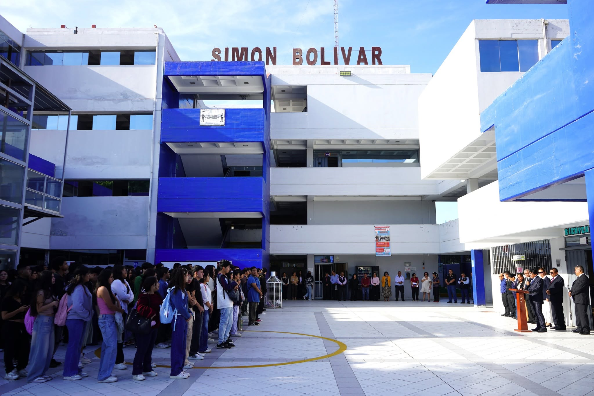
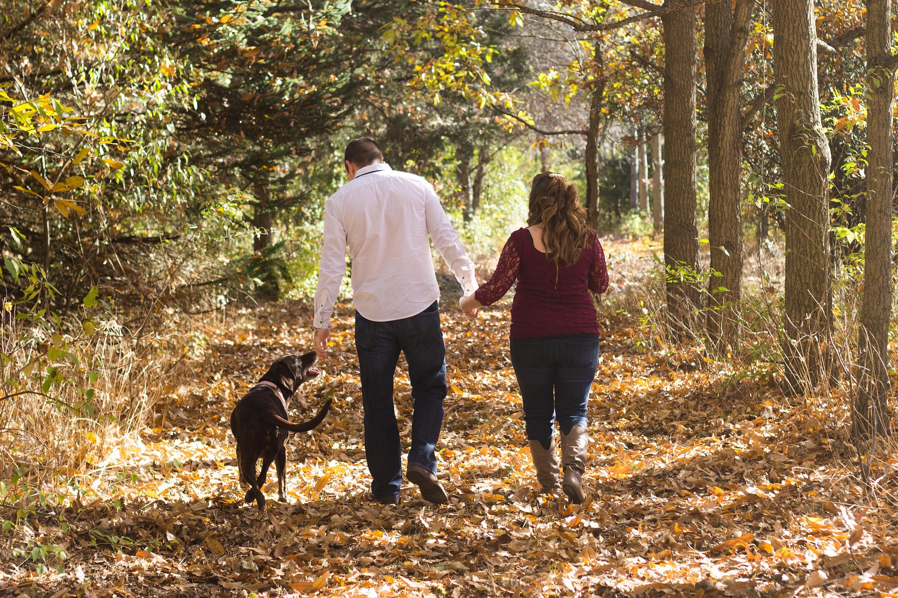
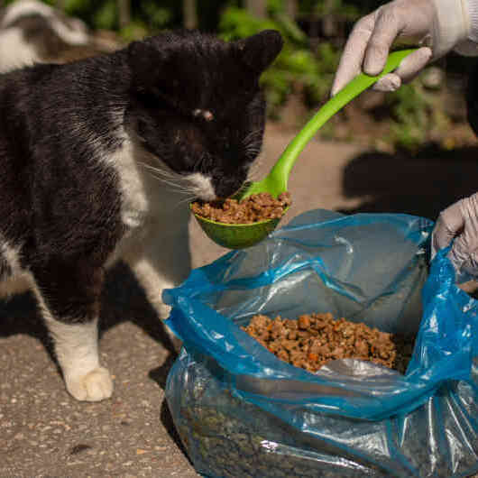

Conoce el origen de Felices Colitas Callao y el propósito que nos motivó a crear este proyecto.

Somos estudiantes del Instituto de Educación Superior Público Simón Bolívar, de la carrera de Desarrollo de Sistemas de Información. Como parte de nuestro aprendizaje, decidimos llevar nuestros conocimientos más allá del aula y convertir una idea de concientización en una página web.
Así nace Felices Colitas Callao, un proyecto creado por tres estudiantes que buscan utilizar la tecnología para transmitir un mensaje de respeto, responsabilidad y cariño hacia nuestras mascotas.
Queremos recordar que una mascota no es solo un animal de compañía. Es parte de nuestra familia, comparte nuestros días y nos brinda cariño, alegría y compañía sin pedir nada a cambio.
Por medio de esta página buscamos generar conciencia sobre el cuidado responsable, fortalecer el vínculo entre las personas y sus mascotas y, sobre todo, promover una cultura en la que abandonar nunca sea una opción.


Detrás de cada mascota que termina en las calles existe una historia. Muchos animales pasan de tener un hogar a enfrentarse al hambre, al frío, a las enfermedades y a la indiferencia.
Qué causa el abandono de mascotas en Perú: adoptar sin pensarlo bien, no tener tiempo ni dinero para cuidarlas y no esterilizarlas, entre otras razones.
Con actividades de concientización sobre el abandono animal queremos que más personas comprendan que tener una mascota implica un compromiso para toda la vida: cuidarla, protegerla y permanecer a su lado.
EL ABANDONO NO DEBE SER EL FINAL DE SU HISTORIA.
Creemos que la mejor manera de evitar el abandono es informar. Por eso queremos impulsar charlas educativas y mensajes simples sobre alimentación, salud, paseos y cariño.
Soñamos con una comunidad de vecinos por la protección animal en Callao y con sumar a las organizaciones que protegen a los animales en Callao, para que ningún perro o gato se quede sin ayuda.
NUESTRO EQUIPO
Detrás de esta iniciativa estamos tres estudiantes que decidimos convertir nuestros conocimientos en una propuesta que busca generar conciencia y dejar un mensaje positivo.
Una mascota no es solo compañía, es parte de la familia. Cuidemos, valoremos y protejamos a quienes siempre están a nuestro lado. 🐾❤️